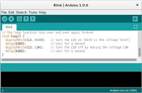
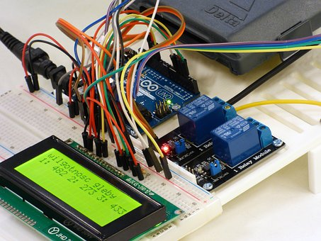
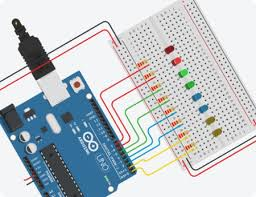

Programozás tananyag
Bevezetés, "C" alapok, digitális kimenetek és bemenetek, analóg bemenetek: prog1
Függvények, tömbök, hétszegmenses kijelző és LCD kijelző vezérlése, PWM kimenetek: prog2
Léptető és szervó motorok vezérlése, IIC kommunikáció, hőmérséklet szenzorok: prog3

Programok
óra-hőmérő LED mátrix kijelzőre: óra_LEDm
óra-hőmérő 7 szegmenses kijelzőre: óra_7szegm

Egyéb segédlet
Nagyon jó online szimulátor: Tinkercad